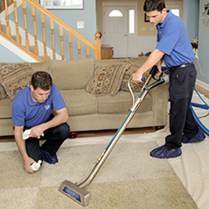

Why Everyone Should Hire A Professional Carpet Cleaning Company

There's a reason certain individuals are considered to be experts in
their field, while others are simply interested. Professionals have
access to specific instructions, tips and insights from the industry
into the particular field, as they work with the same thing every day.
The novices and the enthusiasts learn it themselves or learnt it via
U-tube. They may be lacking the correct information on the proper way
to complete a task. When it comes time to tackle an improvement project
for the home homeowner looking to cut costs, tries to complete the
project by himself, without the assistance of experts. This is the
point where problems begin.
If you are looking for advice on cleaning your carpet getting a professional's help is the best option. Due to the vast selection of carpets and fabrics employed today, specific issues can arise that only a specialist will be able to solve. The mysterious stain, which isn't known the source of it, or the cause could require a specific product to get rid of. The use of generic or cleaners from the store could set a stain and permanently fade the carpet. Carpet Cleaning Burleson When you attempt to tackle an issue with carpet cleaning not knowing the right procedure to use or the product to use could result in a carpet that is more discolored than previously, and is likely to cost you more than it did before. Here are a few principal reasons it is important to call an experienced carpet cleaning company prior to attempting to get rid of the stain from your carpet without having proper information and the right products.
The Interaction Between the Carpet & Certain Chemicals
Different carpet fibers react differently when exposed to different cleaning agents and chemical. This is the reason that simply purchasing a carpet cleaner solution from your local hardware retailer and then putting it off with only the instructions printed on the inside of the container can be hazardous to the carpet. Certain cleaners contain bleach, that can cause lightening or the appearance of a yellowed carpet, turning a stain into a stained spot that won't come out completely. Once you've got bleach staining your carpet, there's no turning back.
Because an experienced carpet cleaning
service will be able to determine the kind of carpet fiber, as well as
the most effective cleaning technique There is less room for error.
It Will Not Be Cheaper in the Long Run
When a person attempts to undertake a DIY project, there are certain obstacles that are unforeseen and get out of the way. In most cases, this adds cost or time to the project in a sudden manner. A lot of people think that an expert carpet cleaner will charge $200 for professional cleaning the entire house, however the cleaner is just $25, and a rental vacuum costs only $75 per day at your local store for home improvement and then they've saved $100 by making the cleaning themselves. However, they've not considered the amount of duration required to finish such a huge project , or the power and water required. Take a look at the value of your time. If the task takes five hours to complete, it costs approximately $20 per hour, which is less than the initial estimation of 200 dollars for the carpet cleaning service to take over the job. This isn't a terrible pay rate, but that's five hours of time lost and 5 hours of inconvenience to family members, and also that the person who is doing the work is exhausted beyond what they were before.
Apart from the amount of time required to clean your carpet, using a rental machine is temporary. It is a shampooer which uses detergents that adhere to carpet's fibers and cause dirt to be drawn to it quicker than before. Carpets can support up to six times the weight of dirt before anyone even realizes that it's dirty However, it'll get more filthy due to the detergent employed. The dirt is then pushed into the bottom of the carpet. It it will rise back towards the top, revealing the stains shortly after the drying process is done (which can cause mold spores to develop).
The end result is that a basic carpet cleaning task can cost you $100 or more for materials, 5 hours of work and hundreds of dollars to correct any errors that occur as a result of a cleaning that is not professionally done, and the carpet could get dirty once more. Therefore, it's not always the cheapest option to take on the job yourself.
Not Missing the Little Things
Professional carpet cleaning firms take care of the small particulars. Professional carpet cleaners are educated to look after the property of the customer. Furniture is moved in a controlled manner while small pad pads are placed under metal or wooden legs to ensure that discoloration of the carpet doesn't result from rusting or the transfer of stain from wood. The carpet is then raked or vacuumed to lift the pile, leaving carpets soft and soft. The tough spots are treated to ensure satisfaction. If the business is smart to do so, a bottle of cleaner (bearing the name of the business and the number of their phone) will be left to the customer in the event the carpet spills happen again. A reputable carpet cleaning service will be able to take care of those little details that are essential. The professionals in the industry deal with many problems with carpet cleaning and usually get their knowledge through a lot of trial and trial and. The methods and products employed have been tested and tried numerous times to guarantee complete achievement. Many hours of research and ingenuity has been put into the Carpet Cleaning Burleson products of the company.
A professional is someone employed
to complete specific tasks that earn a living by working in a
occupation. Anyone who rely on their job to provide for and provide for
their families members is bound to complete their work to the best of
their abilities and isn't an expert. Contacting a professional,
reputable carpet cleaner can ease the burden and saves the user time
and cash.